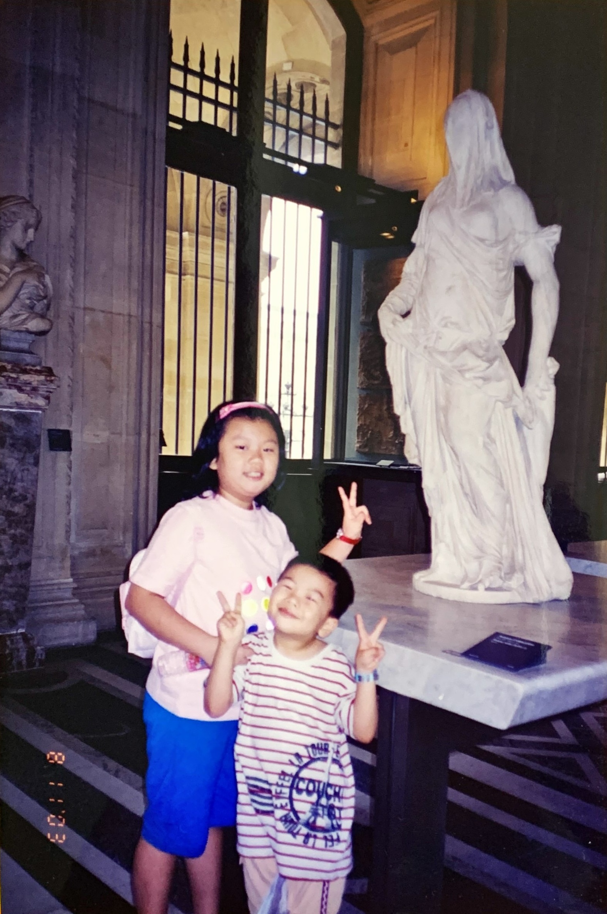
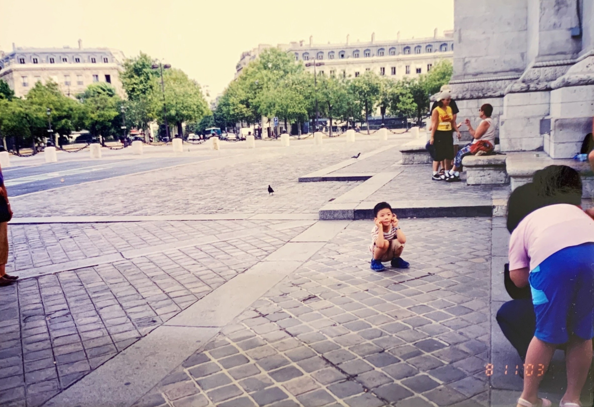

Special experience of My Life
When I was four years old, I almost became French. Our family traveled to France with my mother’s colleagues for seven days. One afternoon we visited the Louvre, which is one of the five largest museums in the world. At that time, my mother was busy making videos and wanted to record the magnificent and gorgeous Louvre. At the age of four, I was attracted by the crowds of pigeons in the square. I chased the pigeons everywhere, imagining that I was playing tag with the pigeons. But whenever I approached it slowly and quietly, it would fly away so quickly that I cannot even get close to them, so I kept running and running to find the next target. When I regain my composure, the surrounding scenery was no longer the one I recognize. There were tourists everywhere, but I just couldn't find my family. I burst out crying and yelling, "Mom!" Suddenly, A foreigner held me up. He seemed to know that I was speaking Chinese, so he took me to another person who could speak Chinese. The man took me down to the basement of the square, probably because he wanted to take me to the service desk. I still remember the shouting at that time. I shouted: "My mother is upstairs." At this moment, my mother was about to walk from the square to the basement and found me at the stairs. Not only my family, but all mom's colleagues were able to load off their minds. I have no memory of where I have been during the whole tour, but I will probably never forget this experience. When I was growing up, my family often told me that I almost became French when I was four.
在我四歲的那一年，我差一點成為法國人。我們家跟著我母親的公司旅遊，到法國遊玩七天。其中一天下午我們到羅浮宮參觀，那是世界五大博物館之一。那時候媽媽忙著錄影，想記錄下壯麗又宏偉羅浮宮。而四歲的我被廣場成群的鴿子吸引，到處追逐鴿子，幻想自己和鴿子在玩鬼抓人，非要抓到牠們不可。可是每當我緩緩接近牠的時候，牠就會以迅雷不及掩耳的速度飛離，於是我就不斷奔跑尋找下一個目標。回過神來，四周已經是我不認得的景色，周圍到處都是觀光遊客，我卻找不到我的家人，我開始在原地嚎啕大哭並嘶吼著：「我要找媽媽。」突然，有個外國人把我抱起來，神奇的是，他似乎知道我在講中文，於是他把我抱給另一個會講中文的人。那個人把我帶下去廣場的地下室，應該是想帶我去服務台。到現在我都還記得那時候的呼喊，我喊道：「我媽媽在上面。」這時我媽媽剛好準備從廣場走到地下室，找到了我。不只我家人，整台遊覽車上的人懸在半空的心也才得以放下。整個旅遊我去過哪裡玩過什麼我都沒有記憶了，但這件事我大概永遠也不會忘記。之後在成長過程中，我家人常常跟我說，我四歲的時候差一點就變成法國人了。